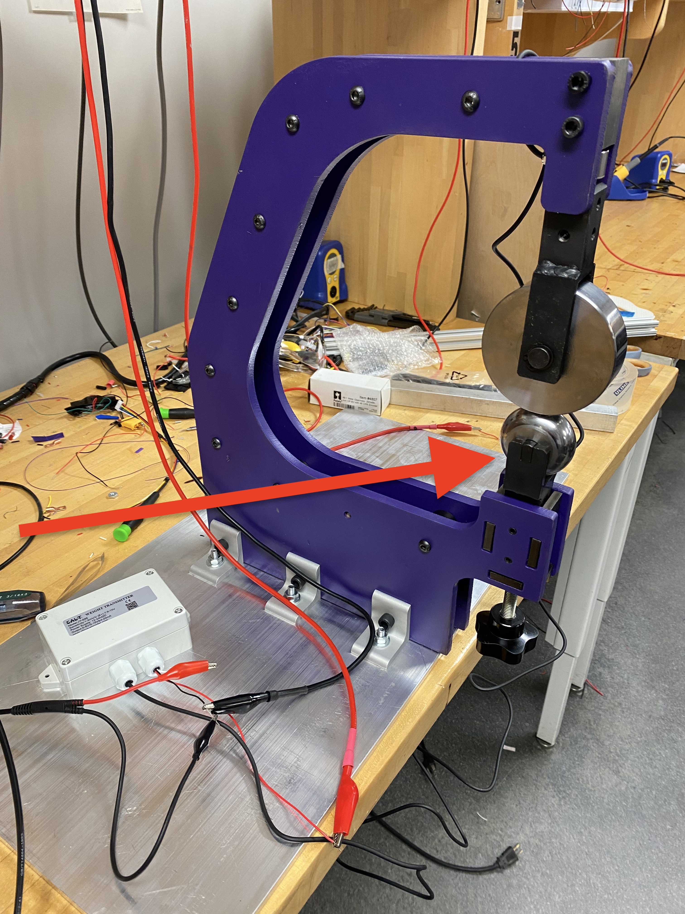
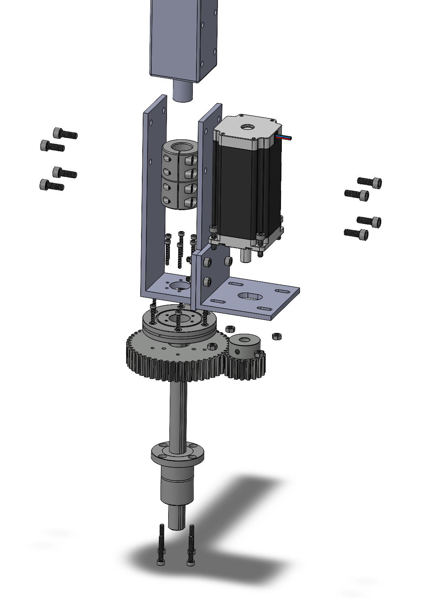

Auto Anvil Wheel
Northwestern's Advanced Manufacturing Processes Lab
I was hired as a graduate student worker to continue some of the work necessary in fully automating the English wheeling process. Specifically, I was tasked with mechanising the raising and lowering of the anvil wheel. The anvil wheel (highlighted in red to the right), is moved up and down by a lead screw and controls how much force is exerted on a piece of metal while forming.
Calculations and Design Considerations
I did the math to determine how much force is necessary to move the anvil wheel at its highest force value including a factor of safety.
My calculations informed the gear selection where I used gear theories to determine the max tooth load and lifetime of the gears I intend to use. After I knew what gears to use, I found the appropriate stepper motor to give plenty of torque to get the job done.


CAD and Control System
Using Solidworks, I designed the auto-anvil wheel system (left) based on measurements of the existing English wheel and the calculations described above. The next step is to build this setup! I am proficient in CNC machining, and plan on making the mounting brackets as seen in this design.
Additonally, I want to implement this design with a PID control system. I will feed the system a force value I want to apply to the sheet metal, and the system should raise the anvil wheel to the proper hight given an active readout of the force.
I am currently working on this project, so contact me for updates!